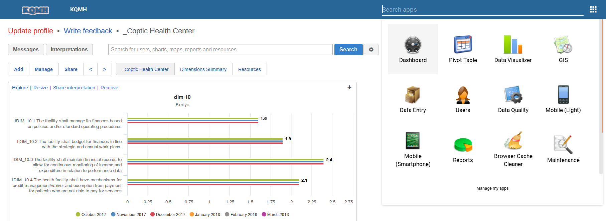

Getting Started with KQMH¶
System Access¶
The system can be accessed on https://kqmh.uonbi.ac.ke. This secure system requires a user name and a password. In case you do not have login credentials to KQMH, you can make an application for user credentials through the Integrated MOH service Desk.
Logging in¶
When you navigate to the above URL, you will be directed to a login page. You are required to provide your username and password in order to access/use the system. The figure below is a screenshot of the start page/login page;
Figure 1: Login page
Landing page¶
Once logged in, the user can see their dashboard as this is the default landing page. The dashboard is customisable to fit your own preferences in terms of the reports/charts you would love to see as default.
Figure 2: Landing page
Note
More about dashboard is discussed under the Reports section.
KQMH Applications¶
KQMH is built on DHIS2 platform such that all the modules are organized as apps. Everything can be accessed by searching on the apps, but this is dependent on the rights one has.
Figure 3: KQMH Apps
Logging Out¶
On the far right of the top bar on the system, there is Profile menu. When you hover your mouse pointer on the menu, a drop down appears that has a log out button. Click on the button to signout. Below is a screenshot of the same: